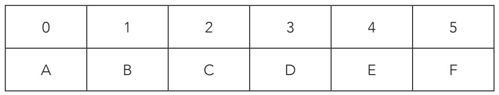

无论是信息接收者还是发送者，在什么条件下，才能破解一条用仿射密码加密的信息呢？举个简单的例子来说明这个问题，加密一条用6个字母写成的信息：

文本用仿射密码加密：C(x)=2x+1 (mod.6)。
根据C(0)=2×0+1≡1(mod.6)，字母A对应的加密字母为B。
根据C(1)=2×1+1≡3(mod.6)，字母B对应的加密字母为D。
根据C(2)=2×2+1≡5(mod.6)，字母C对应的加密字母为F。
根据C(3)=2×3+1=7≡1(mod.6)，字母D对应的加密字母为B。
根据C(4)=2×4+1=9≡3(mod.6)，字母E对应的加密字母为D。
根据C(5)=2×5+1=11≡5(mod.6)，字母F对应的加密字母为F。
可是，如果用同样的仿射密码对信息“ABC”和“DEF”加密再译解后，得出的却不是原信息，这是怎么回事？
如果加密表达式为C(a,b)(x)=(ax+b)(mod.n)，那么只有gcd(a,n)=1时，才能明确译解信息。在上例中，gcd(2,6)=2，就不符合这个限制条件。
解密的数学运算过程就相当于在已知数值y，模为n的条件下，求出未知数x：
C(a,b)(x)=(ax+b)=y(mod.n)
(ax+b)=y( mod.n)
ax=y-b(mod.n)
换句话说，我们要求出a-1（a的倒数）的值，即满足a-1a=1的条件：
a-1ax=a-1(y-b)(mod.n)
x=a-1(y-b)(mod.n)
接下来，要想成功译解，就必须计算数字a对模n的倒数，为了不浪费时间，需要提前知道是否真的存在这样一个倒数。仿射密码C(a,b)(x)=(ax+b)(mod.n)，只有在满足gcd(a,n)=1的条件下，才有一个倒数。
以仿射密码C(x)=2x+1(mod.6)为例，我们想知道数字a（此处为2）是否有一个倒数。也就是说，是否有一个小于6的整数n满足公式2·n≡1(mod.6)。要想解决这个问题，我们要把所有可能的数值都试一遍，即0、1、2、3、4、5：
2·0=0，2·1=2，2·2=4，2·3=6≡0，2·4=8≡2，2·5=10≡4
可见没有符合条件的值，从这点可以得出，2没有满足条件的倒数。实际上，这点是我们已知的，因为gcd(2,6)≠1。
现在假设我们已经截获了一条加密信息“YSFMG”。我们知道这条信息已经按照仿射密码以C(x)=2x+3的方式加密，而且原文是西班牙文，有27个字母（包括字母N之后的Ñ）。那原信息是什么呢？首先计算出gcd(2,27)，结果为1。这说明能够破解出原信息！要想破解，我们必须求出C(x)=2x+3对模27的反函数：
y=2x+3
2x=y-3
要分离出x，就必须在方程等号两边乘以2的倒数。对模27时，2的倒数是一个整数n，符合2·n≡1(mod.27)，求出结果为14，就此确认：
14·2=28≡1
因此：
x=14(y-3)
接下来，我们就可以破解信息了：
字母Y占据第25位，解密它的过程是14(25-3)=308≡11(mod.27)。
字母表上的第11位为L，所以Y对应的解密字母是L。
同理，S：14(19-3)=224≡8(mod.27)，对应的解密字母是I。
F：14(5-3)=28≡1(mod.27)，对应的解密字母是B。
M：14(12-3)=126≡18(mod.27)，对应的解密字母是R。
G：14(6-3)=42≡15(mod.27)，对应的解密字母是O。
破解后的信息为西班牙单词“LIBRO”（书）。